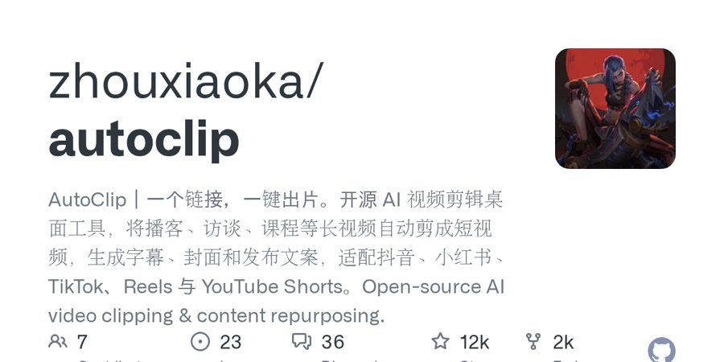
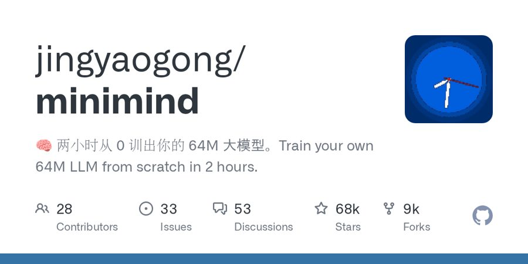
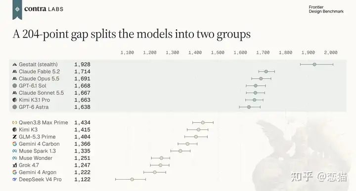
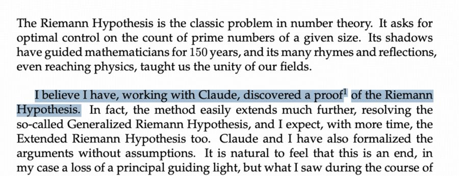

11 月 21 日 · 8 条选题
今日AI热点集中在模型突破与工具落地，工具实测类更适配账号。
01爆破戏疑似AI做的：影视里的AI痕迹怎么辨
微博热搜出现「这段爆破戏疑似AI做的」话题，网友对影视作品中爆破镜头的真实性产生怀疑，讨论AI生成画面已渗入影视制作。
为什么火
AI生成内容进入大众娱乐视野，普通人第一次直观感受到「眼见不一定为实」，讨论门槛低、参与感强。
切入角度
- 教读者用3个细节判断视频是否AI生成：光影一致性、粒子物理、镜头运动
- 盘点近期被网友质疑AI做的影视/广告片段，做成对比图集
- 普通人也能玩：用AI视频工具复刻一段「爆破大片」，附操作步骤
小红书标题
这段爆破戏是AI做的？3招教你辨
眼见不为实！AI视频已经混进影视剧
适合：爱刷剧刷短视频、对AI好奇的普通用户
02DeepSeek付费体验直线上升，值不值得掏钱
微博热搜话题称DeepSeek付费体验直线上升，用户讨论付费后使用体验的变化，涉及是否值得为AI工具付费。
为什么火
AI工具付费是普通用户最关心的实际问题，直接关系钱包，讨论天然带对比和站队。
切入角度
- 免费版vs付费版实测对比：同一批任务分别跑，列出差异清单
- 给普通人的付费决策树：什么场景该付费、什么场景免费够用
- 盘点当前主流AI工具的付费档位与性价比，做成一张表
小红书标题
DeepSeek付费后，我实测了10个任务
AI工具该不该付费？看完再决定
适合：日常用AI写作、办公、想省钱又怕踩坑的用户
03AI续写爱情公寓婚礼，普通人也能做同人剧
B站日榜视频「当我用AI续写爱情公寓4关谷悠悠婚礼」播放89.9万，属于AI全民制作人活动作品，用AI生成剧集续写内容。
为什么火
经典剧集情怀+AI创作，观众既看热闹也想自己动手，二创门槛被AI拉低。
切入角度
- 拆解这条视频的制作流程：剧本、配音、画面分别用什么AI工具
- 教读者用AI给自己喜欢的剧写一集番外，附提示词模板
- 盘点B站AI二创热门作品类型，看哪种最容易出爆款
小红书标题
用AI续写爱情公寓，我哭了三次
0基础用AI做同人剧，附全流程
适合：爱追剧、想做二创但不会剪辑的普通用户
04花4999请机器人拍视频，值不值
B站热门视频实测花4999元请机器人拍视频，探讨这款结合机器人形态的拍摄设备能否满足日常拍摄需求，播放75.1万。
为什么火
AI+硬件+拍摄，价格具体、场景日常，普通创作者关心能不能替代人工拍摄。
切入角度
- 4999元机器人拍摄 vs 手机+云台，同场景实拍对比
- 这类AI拍摄硬件适合谁：口播、探店、vlog分别打分
- 算一笔账：买设备还是请人拍，多久能回本
小红书标题
4999的机器人帮我拍视频，值吗
AI拍摄硬件实测，手机可以退休了？
适合：做小红书、短视频的普通创作者
05AutoClip开源：一个链接一键出片

GitHub Trending项目AutoClip，开源AI视频剪辑桌面工具，可将播客、访谈、课程等长视频自动剪成短视频，生成字幕、封面和发布文案，适配抖音、小红书等平台。
为什么火
一键长转短直接命中自媒体人刚需，开源免费降低门槛，star增长快。
切入角度
- 用AutoClip把一期播客剪成5条小红书视频，全程录屏
- 对比AutoClip与剪映自动剪辑，谁更适合新手
- 长视频转短视频的选题技巧：哪几段最容易被剪成爆款
小红书标题
开源神器！长视频一键剪成短视频
一个链接出片，剪辑师要慌了
适合：做播客、课程、口播内容的普通创作者
06两小时训出64M大模型，普通人也能玩

GitHub Trending项目minimind，主打两小时从0训出64M大模型，面向想了解大模型训练原理的学习者。
为什么火
「两小时」「从0训练」把大模型祛魅，非开发者也想看看自己能不能跑通。
切入角度
- 非程序员视角：跟着教程跑一遍，记录卡在哪一步
- 用大白话讲清楚「训练一个模型」到底在做什么
- 训出来的64M小模型能干嘛？实测几个日常任务
小红书标题
两小时训出自己大模型，我试了
大模型没那么神秘，2小时跑通
适合：对AI原理好奇、愿意动手试的普通用户
07神秘模型Gestalt设计基准超越Claude和GPT

知乎热榜讨论神秘模型Gestalt横空出世，在设计基准上大幅超越Claude和GPT，网友追问其来历。
为什么火
新模型挑战头部产品，设计能力又是普通用户能直观感受的维度，悬念感强。
切入角度
- 设计类任务实测：让Gestalt和主流模型做同一张海报文案+排版
- 普通人怎么第一时间用上这类新模型，入口与注意事项
- 设计基准强意味着什么：对做图、做PPT的人有什么实际影响
小红书标题
新模型设计能力超Claude？实测
Gestalt是什么来头，普通人能用吗
适合：用AI做图、做PPT、做海报的普通用户
08黎曼猜想被AI证明？普通人该怎么看

知乎热榜话题称数学家表示与AI合作证明黎曼猜想，证明稿超25万页；另有B站视频称AI对黎曼猜想的证明通过形式化验证。
为什么火
顶级数学难题+AI，话题量级极大，真假难辨，普通人既震撼又困惑。
切入角度
- 用大白话讲黎曼猜想是什么，为什么AI参与会引发轰动
- 教读者判断这类「AI重大突破」新闻的三个核查点
- 借势科普：AI在科研里到底能帮上什么忙，普通人能用的科研类AI工具
小红书标题
AI证明了黎曼猜想？先别急着信
25万页证明稿，AI到底做了啥
适合：对AI新闻感兴趣、想看懂科技热点的普通用户